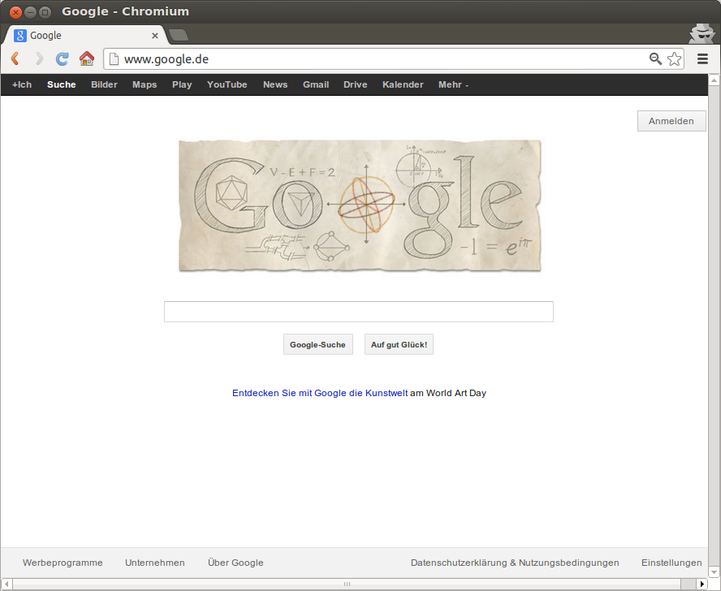

neo4j newsflash
Stefan Armbruster
e: stefan.armbruster@neotechnology.com
t: darthvader42
1.9.M05 & 1.9.RC1
- no more Zookeeper in HA -> easier config
- HA: support for port ranges
- HA: add node on the fly
- /db/manage/server/ha/[getMaster|isMaster]
- 64k relationship types
- gremlin as seperate plugin
- REST batch operations way faster
- Cypher improvements from 1.8.1 (and more)
References:
http://blog.neo4j.org/2013/04/almost-there-neo4j-19rc1.html
Euler's birthday
- Mar 15th is Euler's birthday
- Nice Google doodle
-

Events & Community
- Twitter: @Neo4jDE, @Neo4j
- Tutorials:
- 19.05, 15:00 Webinar Hardwaresizing
- 22.04 - 26.04. Jax, Mainz
- 26.04 - 27.04. NoSQL Matters, Köln
- 16.05. NoSQL Roadshow Berlin
- 16.05. Neo4j Tutorial Frankfurt
- 21.05. Neo4j Tutorial Stockholm
- 28.05. Neo4j Tutorial Amsterdam
- 06.06. Neo4j Tutorial München
- 12.06. Neo4j Tutorial Zürich
- 16.05. NoSQL Roadshow Kopenhagen